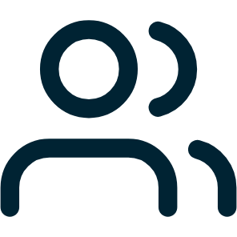

Wie ligt op schema, en waarom
Docentweergave · Onderzoeksmethoden 2
Illustratief voorbeeld, fictieve data
Learning Evidence Timeline
Sanne de Vries, per leerdoel
tijd →
Analyseren
Bronnengebruik
Argumenteren
Paper 2, week 6 · Argumenteren 2 van 4
Feedback docent: “Je conclusie volgt niet uit je eigen data.”
Groep 2B
28 studenten
22
op schema
op alle leerdoelen
6
extra aandacht nodig
op Bronnengebruik

9
maken dezelfde fout
correlatie gelezen als causaliteit
Illustratief voorbeeld met fictieve namen en cijfers. Het leerprofiel is een concept, dit is geen bestaand scherm.
2